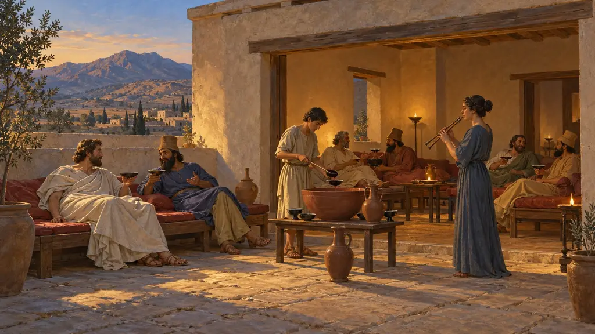
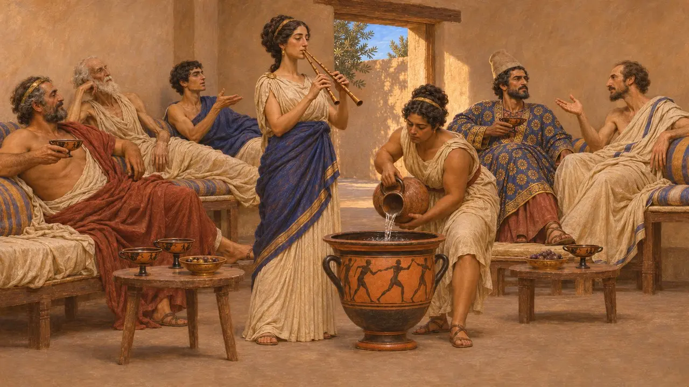
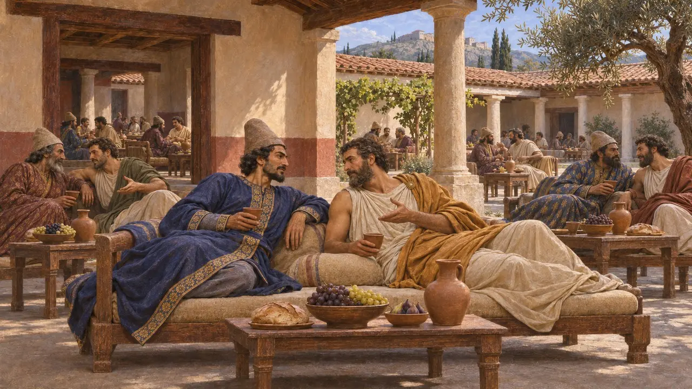
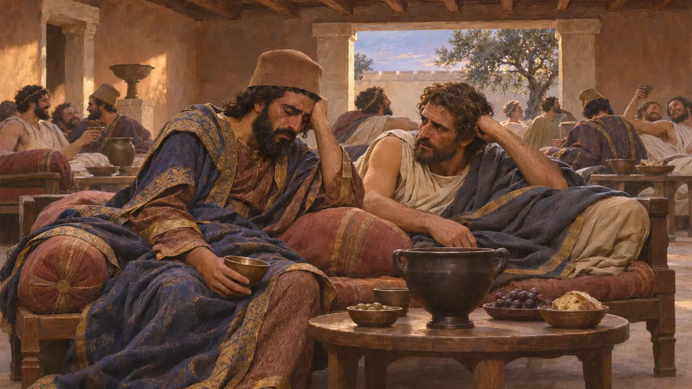
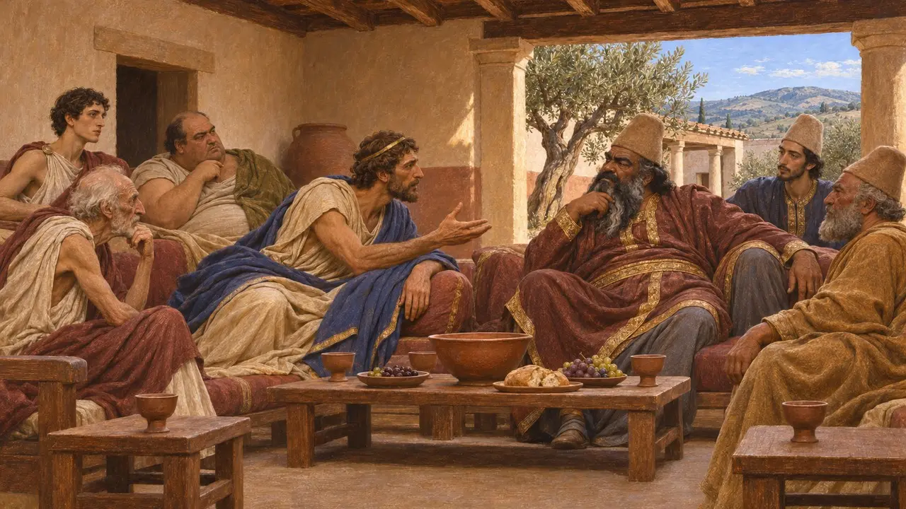
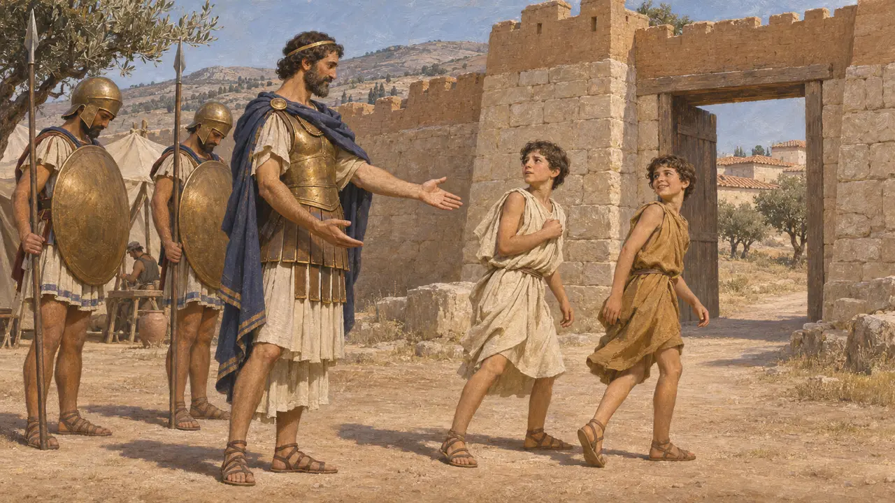

Casa del simposio
Il simposio greco e i suoi ambienti; un banchetto tebano per Mardonio, 479 a.C.
Il simposio era il convito greco dedicato al bere, che si teneva distesi sui letti nella sala degli uomini di una casa privata, con vino mescolato, canti e l'aulos. Nel 479, mentre gli eserciti si radunavano presso Platea, il tebano Attagino ne offrì uno a Mardonio e a cinquanta Persiani. Erodoto lo racconta come una serata di amicizia tra i Persiani e i loro alleati greci, offuscata dalla sconfitta che seguì.
Nel gioco: Nel livello di Platea le città greche possono costruire la Casa del simposio come servizio. Nella realtà i simposi si tenevano in case private, non in un edificio pubblico apposito: qui il gioco semplifica.

Letti conviviali, vino e aulos
Nelle fontiLe coppe e i crateri dipinti ateniesi della fine del VI e dell'inizio del V secolo mostrano uomini sdraiati su letti conviviali, vino mescolato con acqua in un grande cratere e un auleta, spesso una donna a pagamento, che suona il doppio flauto chiamato aulos. L'usanza di bere sdraiati giunse probabilmente in Grecia dal Vicino Oriente verso il 600. Le case classiche scavate, le più note delle quali sono quelle di Olinto, hanno una stanza degli uomini, l'andron, con una porta decentrata perché i letti potessero essere disposti lungo le pareti.
F. Lissarrague, The Aesthetics of the Greek Banquet, 1990; O. Murray (ed.), Sympotica, 1990

Attagino offre un banchetto ai Persiani
Racconto anticoErodoto racconta che Attagino figlio di Frinone, un eminente Tebano, preparò un grande banchetto a Tebe e invitò Mardonio con cinquanta dei Persiani più illustri, insieme a cinquanta Tebani. Gli ospiti non stavano distesi separati per popolo: un Persiano e un Tebano dividevano ogni letto conviviale. Il banchetto ebbe luogo poco prima della battaglia di Platea.
Herodotus 9.15-16

Il Persiano che pianse
Leggenda posterioreErodoto seppe da Tersandro di Orcomeno, presente al banchetto, che il Persiano con cui divideva il letto conviviale pianse sul vino. Il Persiano prevedeva che pochi degli ospiti sarebbero sopravvissuti a lungo, e disse che il dolore più amaro è comprendere molto senza avere alcun potere di cambiare le cose. La scena è costruita come un presagio prima della sciagura, e non si può verificare se quelle parole furono pronunciate davvero come vengono riferite.
Herodotus 9.16

Quanto era tebana l'alleanza
ContesoErodoto annovera Tebe tra i Greci che diedero terra e acqua a Serse e mostra i Tebani mentre consigliano Mardonio sulla strategia. Mezzo secolo dopo, oratori tebani in Tucidide sostennero che nel 480 la città era governata da una ristretta cerchia di uomini potenti, non dal popolo, e che quindi non doveva portarne la colpa. Gli storici discutono ancora fino a che punto la città nel suo insieme abbia scelto la parte persiana.
Herodotus 7.132; Herodotus 9.2; Thucydides 3.62

L'esercito dopo Platea
Racconto anticoDopo la vittoria greca, gli alleati assediarono Tebe e pretesero la consegna dei capi del partito filopersiano, tra cui Attagino. Erodoto dice che Attagino riuscì a fuggire. Al suo posto furono consegnati i figli, ma Pausania li liberò, affermando che i fanciulli non avevano alcuna colpa nella scelta del padre di schierarsi con i Medi.
Herodotus 9.86-88
Fonti
- Herodotus 9.15-16
- Herodotus 9.86-88
- Thucydides 3.62
- O. Murray (ed.), Sympotica, 1990
- F. Lissarrague, The Aesthetics of the Greek Banquet, 1990